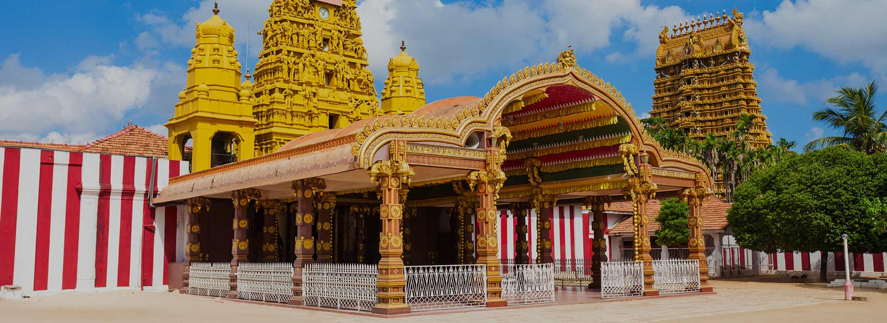
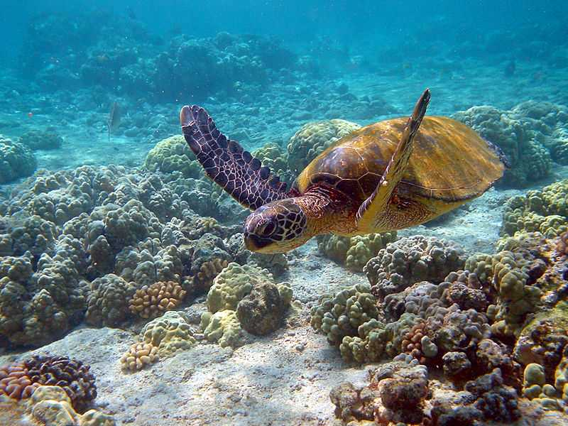
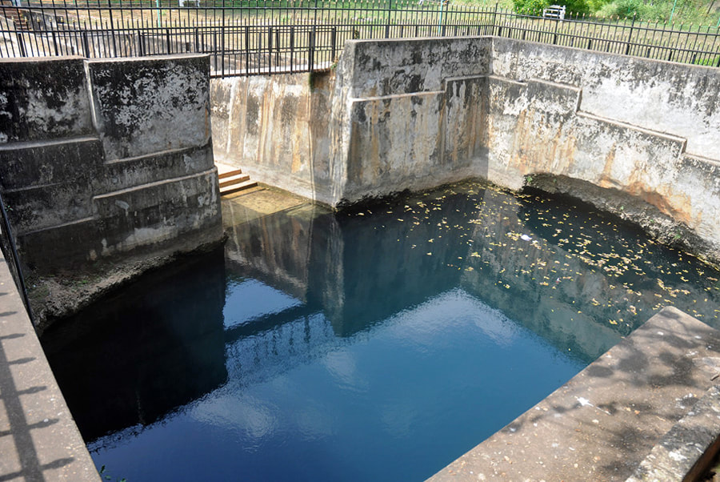
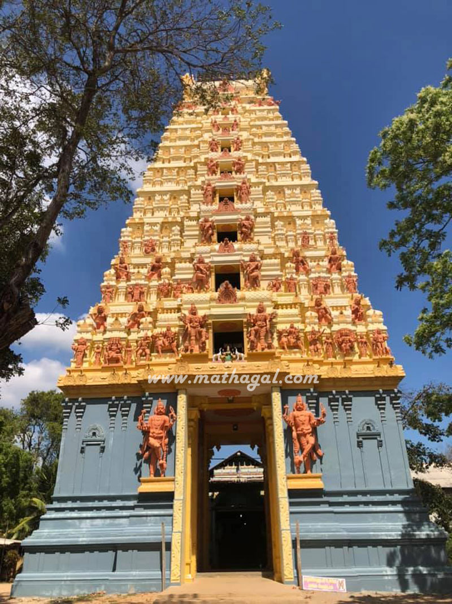
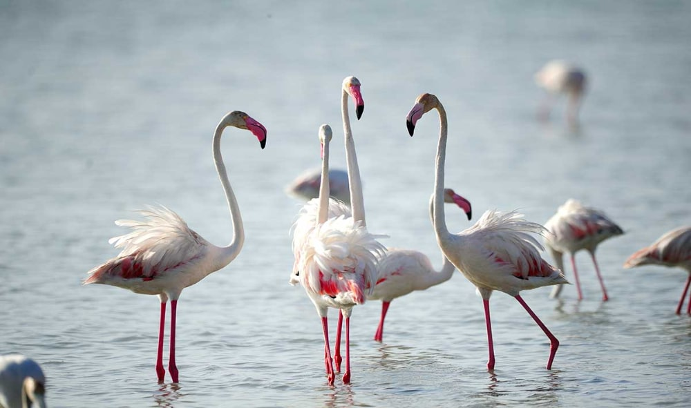
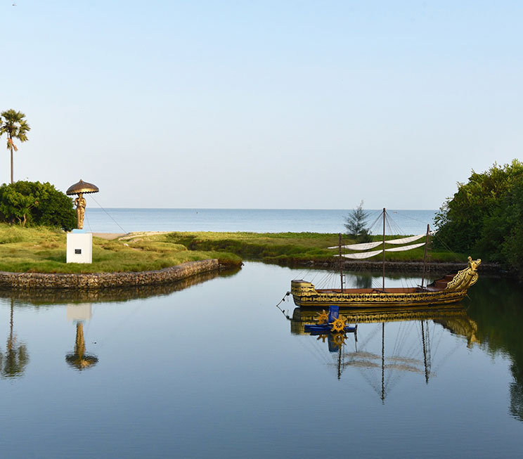

Welcome To The
" NORTH..."
The Northern Province (Sinhala: උතුරු පළාත) is one of the nine provinces of Sri Lanka, the first level administrative division of the country. The provinces have existed since the 19th century but did not have any legal status until 1987 when the 13th Amendment to the Constitution of Sri Lanka established provincial councils. Between 1988 and 2006 the province was temporarily merged with the Eastern Province to form the North Eastern Province. The capital of the province is Jaffna. The majority of the Sri Lankan Civil War was played out in this province.
Places to visit in Northern Province






